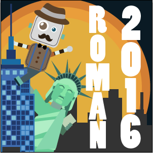

06/11/16
My paper on promoting collaboration between children with a social robot was accepted to RO-MAN 2016!
06/09/16
Malte Jung visited our lab in New Haven to brainstorm ideas and collaborate on projects related to how social robots can influence group dyanimcs.
06/06/16
I passed my Yale Computer Science Qualifying Exam! Thanks to Brian Scassellati, Holly Rushmeier, and Dana Angluin for serving on my qualifying committee.
03/10/16
I've been selected to be one of the General Chairs to organize the HRI Pioneers Workshop in Vienna, Austria in March, 2017!

03/07/16
I'm attending the 2015 HRI Pioneers workshop presenting my work and ideas on social robots that influence group dynamics.

03/08/16
I'm attending ICMI 2015 in Seattle, Washington presenting my work on detecting social dominance in children.